Construção e análise de Redes de Interação de Resíduos (RINs)
O objetivo deste tutorial é construir e visualizar os níveis uma rede de interação de resíduos utilizando o programa Cytoscape.
Instalação do Cytoscape
Linux
Para instalar será necessário baixar o programa em: https://cytoscape.org/download.html
Lembrando que para instalar o Cytoscape, é necessário possuir o Java instalado na sua máquina.
Após baixar, vá ao terminal e vá até a pasta onde o arquivo de instalação foi baixado (normalmente a pasta Downloads).
cd Downloads
chmod u+x Cytoescape_X_X_X_unix.sh
Lembre-se de trocar os Xs pela versão correta do Cytoscape baixada.
Agora execute o script em shell para instalar o programa:
sudo ./Cytoescape_X_X_X_unix.sh
Durante a execução do script de instalação algumas perguntas aparecerão. Basta pressionar Enter.
Ambiente Windows ou MacOS
Instaladores para ambos os sistemas estão disponíveis na página de Download do Cytoscape. Após o download, dê um duplo clique e siga as instruções de instalação.
Instalação dos Plugins
Para a construção das RINs é necessária a instalação dos plugins structureviz2 e rinalyser. Para isso siga as etapas abaixo:
-
Abra o Cytoscape.
-
Ao abrir o programa, uma tela semelhante a abaixo deverá aparecer:
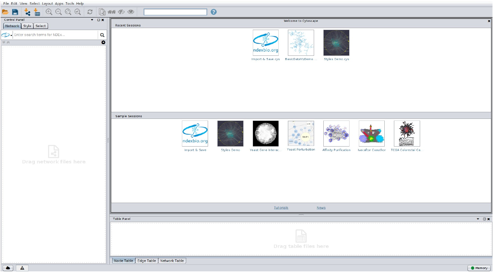
Iremos inicialmente instalar via Cytoscape o plugin structureviz2. Para isso siga os passos abaixo:
-
No menu da janela, vá em Apps > App Manager.
-
Ao clicar nestas opções uma tela semelhante a abaixo deverá aparecer:
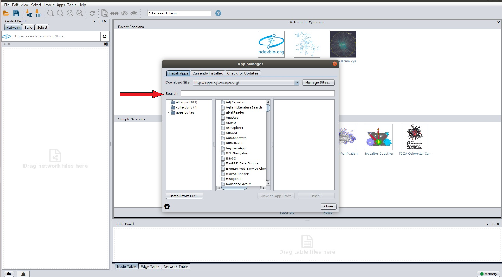
-
No campo destacado digite structureviz2.
-
Selecione o pacote e clique em Install.
-
Repita as instruções acima, mas desta vez, no campo destacado, digite o nome do outro plugin RINalyser.
Como construir RINs?
Existem várias ferramentas e programas disponíveis para construir e analisar RINs a partir da estrutura/modelo de uma proteína. O arquivo de entrada para cálculo da RIN de uma proteína é um arquivo .pdb ou mmCIF. Portanto, é necessário que o seu ponto de partida seja seja uma estrutura resolvida experimentalmente ou um modelo calculado computacionalmente por técnicas de modelagem molecular. A ferramenta que recomendamos para a construção da RIN é o programa RING 3.0, do laboratório BioComputing UP, da Universidade de Pádua, Itália. Para comparar entre diferentes RINs de uma mesma proteína ou de conformações diferentes, recomendamos utilizar a ferramenta CoRINs) do nosso grupo de pesquisa1.
O CoRINs está passando por um processo de atualização.
Seguem abaixo alguns outros links de ferramentas para cálculo/análise de RINs:
Construindo uma RIN via Cytoscape/UCSF Chimera
Para construir o exemple da RIN que iremos utilizar, é necessário baixar este arquivo .xml.
Com a tela inicial do Cytoescape aberta, vamos importar o arquivo para iniciar a construção da RIN. Para isso, siga os passos abaixo:
- Vá no menu e clique em: File > Import > Network > File.
Ao clicar nestas opções uma tela semelhante a abaixo deverá aparecer:
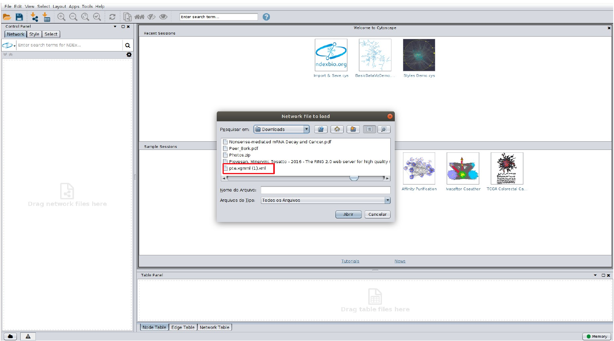
O arquivo pte.xgmml.xml deve ser selecionado. Clique em abrir. A visualização abaixo aparecerá:
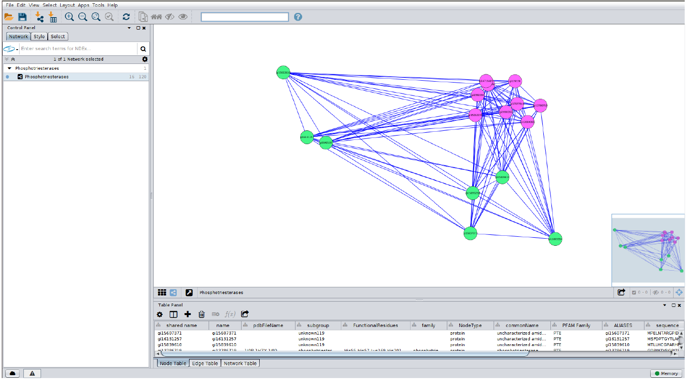
Conexão com o UCSF Chimera
Agora vamos conectar o Cytoscape com o USCF Chimera, para que possamos visualizar as interações entre os resíduos em paralelo ao visualização do arquivo PDB. Para isso, siga os passos abaixo:
- No menu do Cytoscape, clique em: Apps > structureviz > Settings.
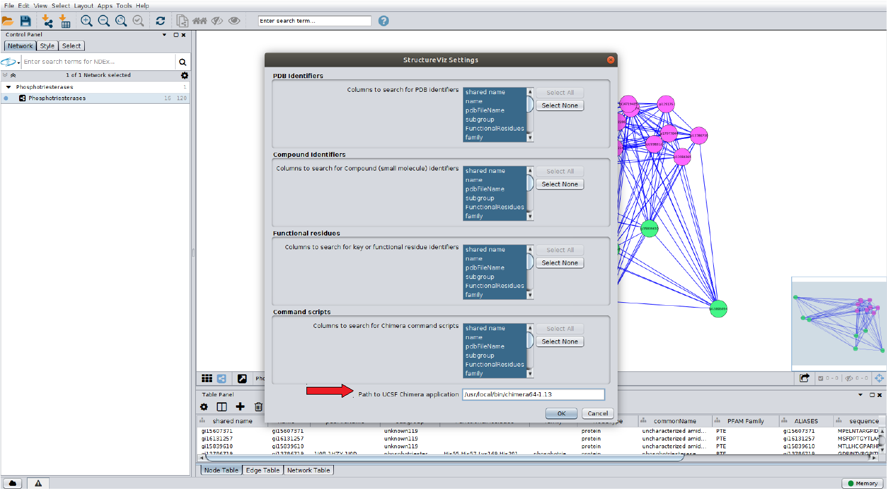
Todas as opções Select All devem ser selecionadas como na figura. No local em destaque, indique o caminho onde está instalado o UCSF Chimera em seu computador.
Em computadores com Linux, normalmente o UCSF Chimera está na pasta /usr/bin. No entanto, isso depende como fizeste a instalação do programa.
Clique em ok. Em seguida, clique novamente em: App > structureviz > Open structure for node(s). Ao clicar nas opções acima a seguinte tela aparecerá:
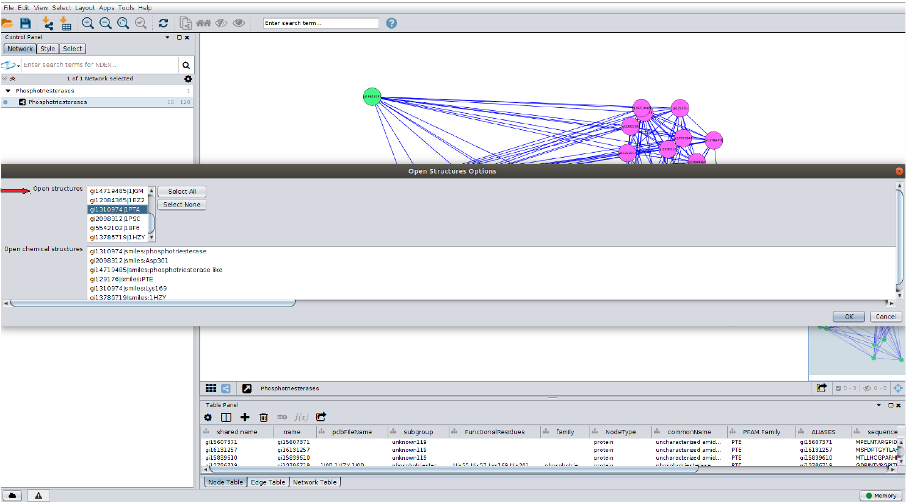
Na opção Open structures, destacada na figura, escolha uma proteína e depois clique em Ok. Aparecerão duas telas: uma com a estrutura da proteína no UCSF Chimera e outra tela do próprio Cytoscape:
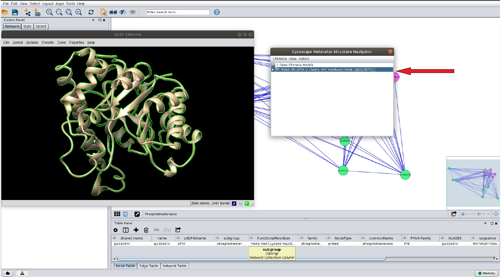
A tela com a seta em destaque deve ser selecionada para que haja a interação UCSF Chimera –Cytoscape.
Construindo a RIN:
Siga as etapas abaixo:
- Vá no menu da janela do Cytoscape e clique em: App > RINalyzer > Create RIN from Chimera.
Ao clicar nestas opções uma tela semelhante a abaixo deverá aparecer:
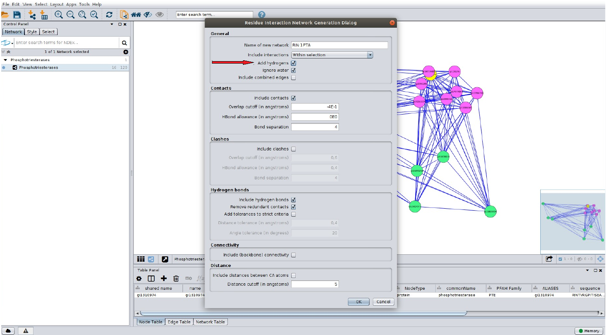
- Na opção em destaque, clique em Add hydrogens. Depois, clique em Ok. A RIN estará pronta.
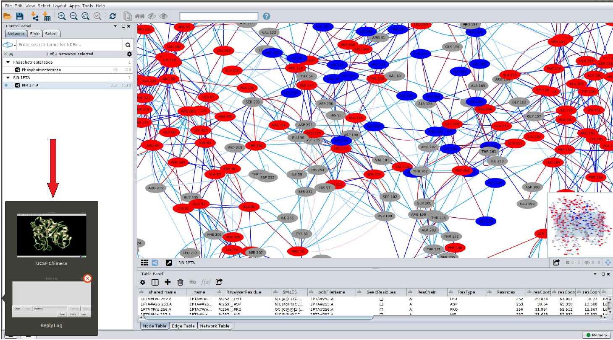
É possível visualizar, via UCSF Chimera, algumas ligações entre os resíduos da proteína. Para isso, siga os passos abaixo:
-
Inicialmente, clique em um resíduo (aminoácido) na RIN.
-
Nesse momento, o UCSF Chimera já está em execução em seu computador. Clique na aba do Chimera, local em destaque na figura.
-
No Chimera, vá no menu e clique em: Actions > Focus. Você observará:
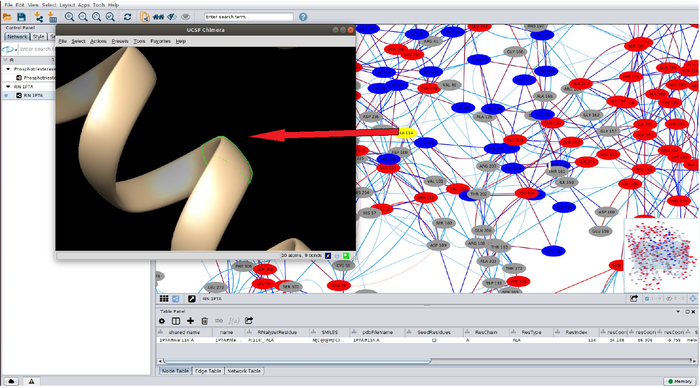
O resíduo no qual você clicou anteriormente aparece em destaque na tela do UCSF Chimera, como demonstrado na figura acima.
Visualizar as interações no resíduo no PDB
Agora iremos visualizar as ligações de hidrogênio existente para este resíduo. Para isso, siga as etapas abaixo:
- No UCSF Chimera: ◦ Vá em: Actions > Atoms/Bonds > Show. ◦ Depois em: Actions > Ribbon > hide. ◦ E agora em: Tools > Surface/Binding Analysis > Find Bonds.
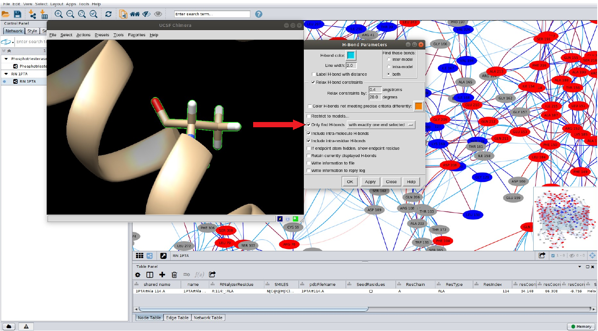
Na janela de opções H-Bond Parameters do UCSF Chimera, marque a caixa de seleção em destaque Only find H-bonds, com a opção with exactly one end selected, da forma como demonstrado abaixo:
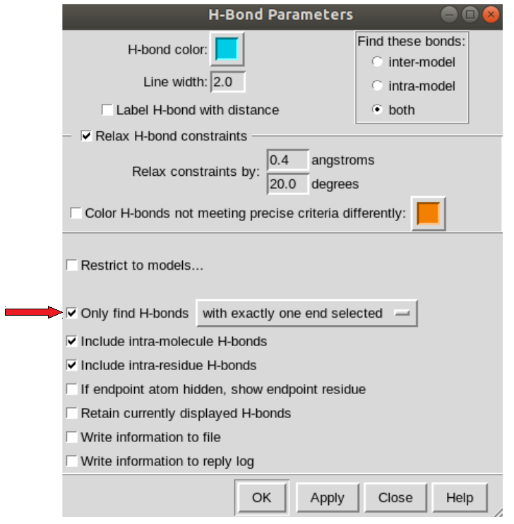
Ao fazer isso, uma tela semelhante a abaixo deverá aparecer:
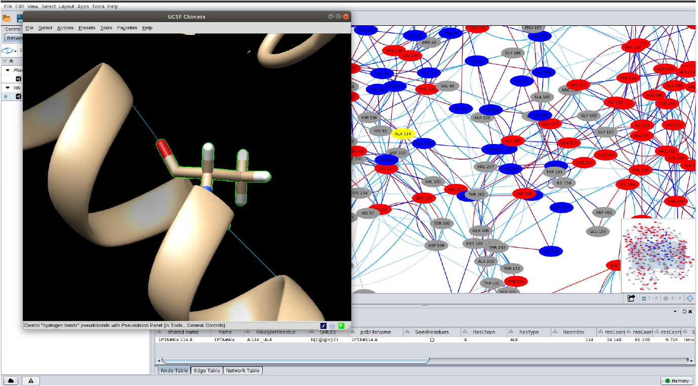
Aqui são visualizadas as ligações de hidrogênio entre o resíduo escolhido na RIN e os outros resíduos na proteína, como demonstrado pela RIN.